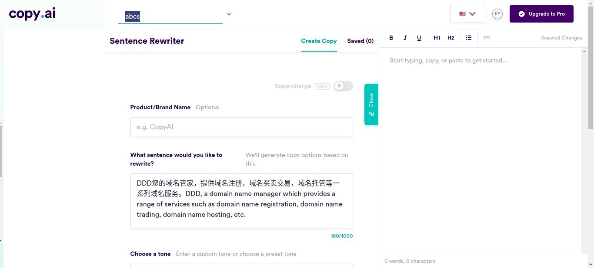
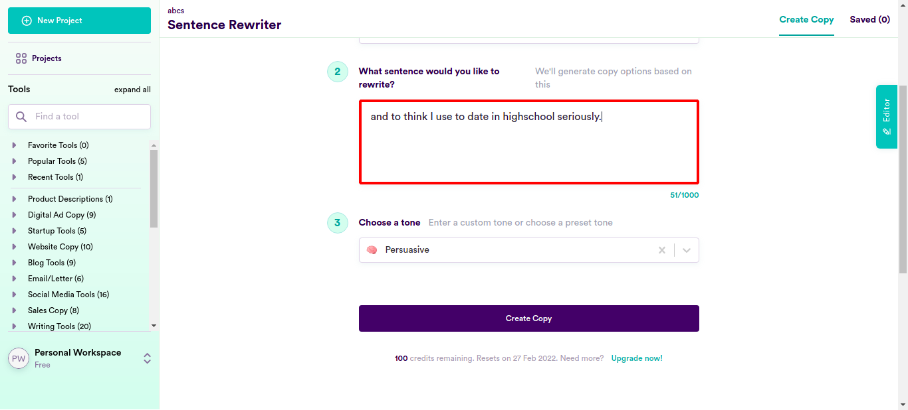
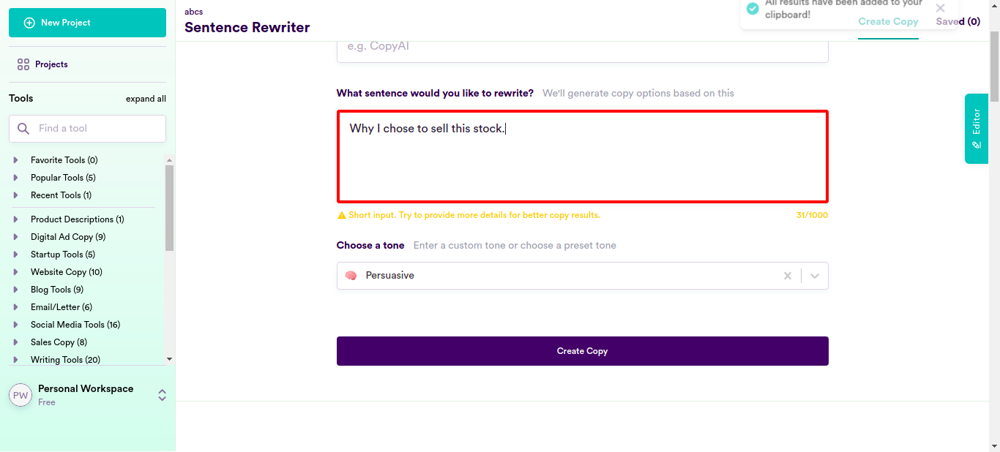
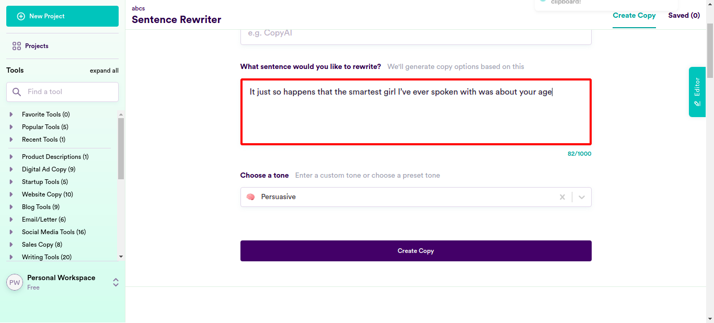
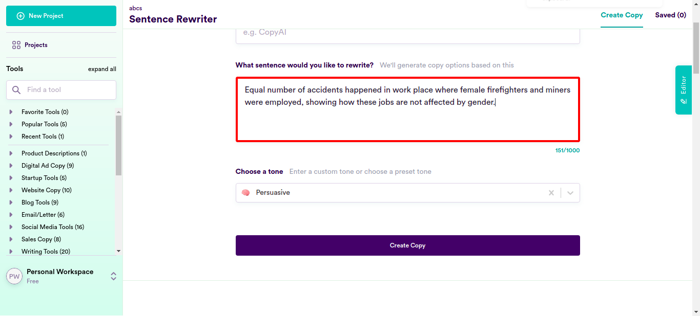
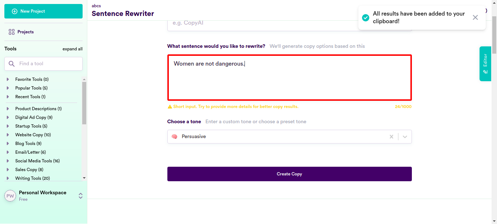
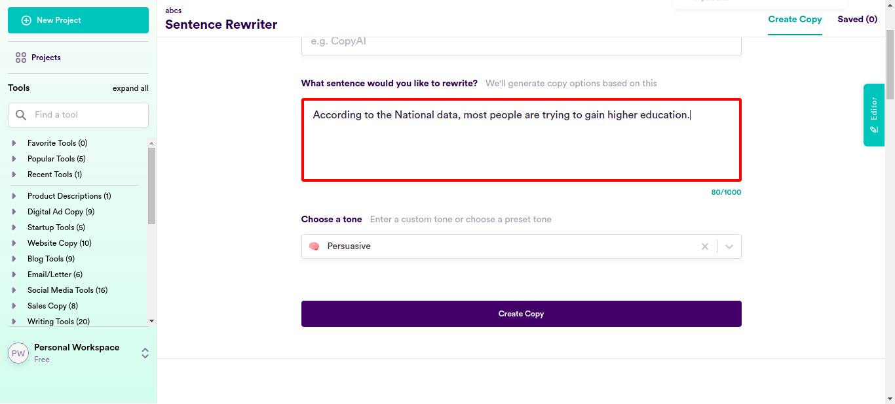
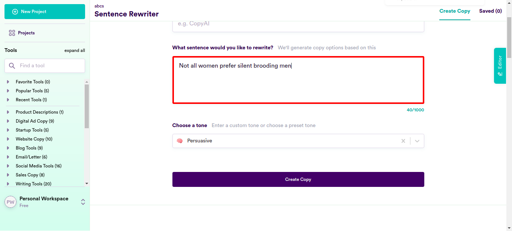
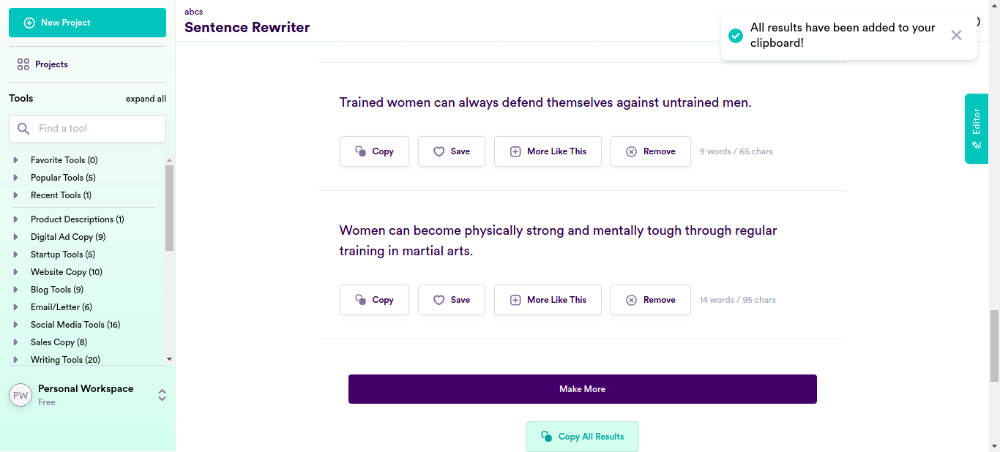

Classes
0 class(es) passed
1 class(es) failed, 0 others
Tests
0 test(s) passed
1 test(s) failed, 0 others
Steps
100 log(s) passed
6 log(s) failed, 1 others
Classes
-
Running on Chrome Jan 27, 2022 17:47:38 failJan 27, 2022 17:47:38 Jan 27, 2022 18:22:57 0h 35m 19s+44ms
-
testJan 27, 2022 17:47:38 0h 35m 19s+32ms fail
-
clickloginJan 27, 2022 17:47:44 0h 35m 12s+856ms fail
Status Timestamp Details check_circle 5:49:50 PM pressKey
TAB key pressed
check_circle 5:50:06 PM enterData
Entered Value "and to think I use to date in highschool seriously." in SentenceField
check_circle 5:50:25 PM enterData
Entered Value "He’s likely been labeled as the most worthy candidate for promotion." in SentenceFieldcheck_circle 5:50:45 PM enterData
Entered Value "The dissatisfied employees came to the office with their own set of complaints." in SentenceFieldcheck_circle 5:51:05 PM enterData
Entered Value "These are usually seen through the haze of self-pity but cannot be rationalized as a justified reaction by some sort of wrongdoing on the part of anyone in general." in SentenceFieldcheck_circle 5:51:25 PM enterData
Entered Value "He no longer believes in overworking and having unrealistic expectations." in SentenceFieldcheck_circle 5:51:44 PM enterData
Entered Value "He discussed how the society has progressed because of feminism." in SentenceField
check_circle 5:52:04 PM enterData
Entered Value "He said that when he was younger, being influenced by socia media made him feel insecure about himself." in SentenceFieldcheck_circle 5:52:23 PM enterData
Entered Value "Why I chose to sell this stock." in SentenceField
check_circle 5:52:43 PM enterData
Entered Value "he now only chooses to date partners who feel as deeply as he does." in SentenceFieldcheck_circle 5:53:02 PM enterData
Entered Value "Jun singled out children who needed help for their education." in SentenceFieldcheck_circle 5:53:21 PM enterData
Entered Value "They talk about me being a hardworking person." in SentenceFieldcheck_circle 5:53:41 PM enterData
Entered Value "I dated a model and she was very career oriented." in SentenceFieldcheck_circle 5:54:00 PM enterData
Entered Value "It just so happens that the smartest girl I’ve ever spoken with was about your age" in SentenceField
check_circle 5:54:20 PM enterData
Entered Value "It was impressive to see he was incredibly kind, had a great smile and was amazingly fun to chat with." in SentenceFieldcheck_circle 5:54:40 PM enterData
Entered Value "It also just so happens that I can recall every single detail of every person I’ve ever dated and all of them were confident irrespective of their physical appearance." in SentenceFieldcheck_circle 5:55:04 PM enterData
Entered Value "Many women are outraged and offended after hearing the man’s demeaning opinions." in SentenceFieldcheck_circle 5:55:32 PM enterData
Entered Value "What kind of things do people say that instantly turn you off on a date?" in SentenceFieldcheck_circle 5:55:52 PM enterData
Entered Value "Equal number of accidents happened in work place where female firefighters and miners were employed, showing how these jobs are not affected by gender." in SentenceField
check_circle 5:56:12 PM enterData
Entered Value "No job should be considered to be a gender specific activity and all job opportunities must meet certain criteria according to their needs." in SentenceFieldcheck_circle 5:56:32 PM enterData
Entered Value "Irrespective of the gender of the employees, accidents are reported in mining or working at a fire station" in SentenceFieldcheck_circle 5:56:51 PM enterData
Entered Value "Women are not dangerous." in SentenceField
check_circle 5:57:11 PM enterData
Entered Value "women are fit for all types of jobs." in SentenceFieldcheck_circle 5:57:31 PM enterData
Entered Value "More of a surprising detail than anything else, more accidents were reported in the case of female firefighters and miners" in SentenceFieldcheck_circle 5:57:51 PM enterData
Entered Value "Just like in every other profession, all jobs like firefighters, miners and construction workers can be done by women." in SentenceFieldcheck_circle 5:58:11 PM enterData
Entered Value "When it comes to professions, firefighting, mining and other such jobs can be done by women as well and there is nothing inherently manly about them" in SentenceFieldcheck_circle 5:58:30 PM enterData
Entered Value "People in such professions might face more accidents due to their own carelessness." in SentenceFieldcheck_circle 5:58:50 PM enterData
Entered Value "Women can very well serve in these fields alongside men." in SentenceFieldcheck_circle 5:59:10 PM enterData
Entered Value "women have an opportunity to get a job because they are competant and qualified." in SentenceFieldcheck_circle 5:59:29 PM enterData
Entered Value "No jobs for women are deemed dangerous." in SentenceFieldcheck_circle 5:59:49 PM enterData
Entered Value "Are you a law-maker? Are you a professional or business owner?" in SentenceFieldcheck_circle 6:00:08 PM enterData
Entered Value "To help you impress the clients, here’s a list of their expectations." in SentenceFieldcheck_circle 6:00:28 PM enterData
Entered Value "People are attracted towards material things" in SentenceFieldcheck_circle 6:00:47 PM enterData
Entered Value "According to the National data, most people are trying to gain higher education." in SentenceField
check_circle 6:01:07 PM enterData
Entered Value "Why do skincare users go to such great lengths to look younger?" in SentenceFieldcheck_circle 6:01:27 PM enterData
Entered Value "The harder you work and the more likely you're going to be taken seriously and promoted at work, right?" in SentenceFieldcheck_circle 6:01:46 PM enterData
Entered Value "Getting older is very natural." in SentenceFieldcheck_circle 6:02:07 PM enterData
Entered Value "With the average woman living to be almost 81, according to the US Census Bureau, indiactes a good health infrastructure." in SentenceFieldcheck_circle 6:02:26 PM enterData
Entered Value "It is normal to have wrinkles, age spots and or sagging." in SentenceFieldcheck_circle 6:02:46 PM enterData
Entered Value "To be human is to be vain and to be vain is to be human." in SentenceFieldcheck_circle 6:03:06 PM enterData
Entered Value "Women are driven to buying books that they think will make them more knowledgeable" in SentenceFieldcheck_circle 6:03:26 PM enterData
Entered Value "Women are not vain and certainly are not obsessed with the project of making themselves attractive." in SentenceField
check_circle 6:03:45 PM enterData
Entered Value "There's a saying that says "It's not rocket science', but I'm not so sure" in SentenceFieldcheck_circle 6:04:05 PM enterData
Entered Value "Not all men are vain in the same way, not all women are vain. S" in SentenceFieldcheck_circle 6:04:25 PM enterData
Entered Value "Both men and women come to my mind when talking about vain people" in SentenceFieldcheck_circle 6:04:44 PM enterData
Entered Value "Vanity is wrongly associated with women you see" in SentenceFieldcheck_circle 6:05:04 PM enterData
Entered Value "Many women may love morally questionable men or celebrities, but that is just a small number" in SentenceFieldcheck_circle 6:05:24 PM enterData
Entered Value "There is no proof of women statistically favouring rich powerful men over men with good looks" in SentenceFieldcheck_circle 6:05:44 PM enterData
Entered Value "Money is a key to people's happiness, and making money for oneself is very empowering thing for many women" in SentenceFieldcheck_circle 6:06:04 PM enterData
Entered Value "It maybe that a people judge their potential partners within seconds of seeing them" in SentenceField
check_circle 6:06:24 PM enterData
Entered Value "Sports like shooting and weight-lifting must never be exclusive boys' club." in SentenceFieldcheck_circle 6:06:43 PM enterData
Entered Value "Women should not avoid sports, especially tennis and golf, for their physical fitness" in SentenceFieldcheck_circle 6:07:03 PM enterData
Entered Value "Women build stable families with strong marriages while excelling in their career" in SentenceFieldcheck_circle 6:07:23 PM enterData
Entered Value "A lot of women enjoy driving rather than being in the backseet" in SentenceFieldcheck_circle 6:07:43 PM enterData
Entered Value "A lot of men spend much thought and effort into what they wear" in SentenceFieldcheck_circle 6:08:02 PM enterData
Entered Value "Many men enjoy shopping and have excellent taste" in SentenceFieldcheck_circle 6:08:22 PM enterData
Entered Value "Women and men belong in professions they have individual talent for , men can be homemakers and women can be plumbers" in SentenceFieldcheck_circle 6:08:43 PM enterData
Entered Value "Masculinity is not synonymous with courage. Qualities cannot be deemed masculine and feminine in any objective way" in SentenceField
check_circle 6:09:03 PM enterData
Entered Value "There is no reason why less pay is reasonable for women in construction, mining and factory work." in SentenceFieldcheck_circle 6:09:23 PM enterData
Entered Value "Women are just not given the option of working in construction, mining and factory work" in SentenceFieldcheck_circle 6:09:42 PM enterData
Entered Value "Women should be paid equal wages as men for the same job" in SentenceFieldcheck_circle 6:10:02 PM enterData
Entered Value "Men and women share the domestic work laundry, cooking, lawn keeping etc these days" in SentenceFieldcheck_circle 6:10:23 PM enterData
Entered Value "Women and men both find certain features in the opposite gender attractive and certain features, like body, odour, unattractive" in SentenceFieldcheck_circle 6:10:43 PM enterData
Entered Value "Women have a rational relationship with materialistic things, media likes to paint them otherwise" in SentenceFieldcheck_circle 6:11:03 PM enterData
Entered Value "Nothing could be farther from the truth that all women are obsessed with fashion" in SentenceField
check_circle 6:11:23 PM enterData
Entered Value "It is a myth that all women have an emotional relation with the act of online shopping" in SentenceFieldcheck_circle 6:11:43 PM enterData
Entered Value "A lot of women consider their wardrobe, shoes and other accessories to be just that, and not a part of their identity" in SentenceFieldcheck_circle 6:12:03 PM enterData
Entered Value "Many women have absolutely no interest in material things like purses, shoes and bags" in SentenceFieldcheck_circle 6:12:23 PM enterData
Entered Value "Perfumes are unisex and is used by all genders to express their personalities" in SentenceFieldcheck_circle 6:12:43 PM enterData
Entered Value "We all love to be pampered" in SentenceFieldcheck_circle 6:13:03 PM enterData
Entered Value "Personality, character and grooming are all important to attract partners" in SentenceFieldcheck_circle 6:13:23 PM enterData
Entered Value "Everybody has a deep emotional and psychological need to fulfill their fantasies, whether it be on a sexual, emotional, or material level." in SentenceFieldcheck_circle 6:13:43 PM enterData
Entered Value "When women say "no" and "nothing" they mean it." in SentenceFieldcheck_circle 6:14:03 PM enterData
Entered Value "Not all women look for gifts or undivided attention from men since they have many things going for themselves" in SentenceFieldcheck_circle 6:14:23 PM enterData
Entered Value "Not all women like jewellery" in SentenceFieldcheck_circle 6:14:42 PM enterData
Entered Value "Many women like tech gear and other accessories" in SentenceFieldcheck_circle 6:15:03 PM enterData
Entered Value "When people are in love, they get all giddy with butterflies, romantic and suddenly have an increasing appetite for sweet candies, chocolate and pastries" in SentenceFieldcheck_circle 6:15:23 PM enterData
Entered Value "Women will be equally fit for operating a loader as men" in SentenceFieldcheck_circle 6:15:43 PM enterData
Entered Value "Women can just like men get trained to drive any vehicle" in SentenceFieldcheck_circle 6:16:02 PM enterData
Entered Value "Women are as cautious drivers as men" in SentenceFieldcheck_circle 6:16:22 PM enterData
Entered Value "Gender has got nothing to do will power tools" in SentenceFieldcheck_circle 6:16:42 PM enterData
Entered Value "It is foolishness to presume that women are easily overpowered" in SentenceFieldcheck_circle 6:17:01 PM enterData
Entered Value "Streets must be made safe for everyone including women" in SentenceFieldcheck_circle 6:17:21 PM enterData
Entered Value "Women are gaining conrol over their environment" in SentenceFieldcheck_circle 6:17:41 PM enterData
Entered Value "Women and men both can stoop to deceit." in SentenceField
check_circle 6:18:01 PM enterData
Entered Value "Its important for women to feel safe but she does not want men to protect her but just be civil." in SentenceFieldcheck_circle 6:18:21 PM enterData
Entered Value "Women love a partner who respects them, not protect them" in SentenceFieldcheck_circle 6:18:40 PM enterData
Entered Value "It is ok to not have the attention of multiple women." in SentenceFieldcheck_circle 6:19:00 PM enterData
Entered Value "She does not need defending" in SentenceFieldcheck_circle 6:19:19 PM enterData
Entered Value "Not all women prefer silent brooding men" in SentenceField
check_circle 6:19:39 PM enterData
Entered Value "The most beautiful thing about a woman is her personality" in SentenceFieldcheck_circle 6:19:59 PM enterData
Entered Value "Women can fight all her demons herself if she is empowered" in SentenceFieldcheck_circle 6:20:19 PM enterData
Entered Value "Women are not anybody's property and they dont need to be protected and provided for, just because they are women" in SentenceFieldcheck_circle 6:20:39 PM enterData
Entered Value "Women have the same senitivities as men" in SentenceFieldcheck_circle 6:20:59 PM enterData
Entered Value "Men need not protect women. Times have changed" in SentenceFieldcheck_circle 6:21:18 PM enterData
Entered Value "No one expects men to be the knights in shining armour" in SentenceFieldcheck_circle 6:21:38 PM enterData
Entered Value "Public opinion can get biased towards men or women in different cases" in SentenceField
check_circle 6:21:58 PM enterData
Entered Value "When in a fight a woman may win or lose, putting a up a good fight is important" in SentenceFieldcheck_circle 6:22:18 PM enterData
Entered Value "It is normal in martial arts for one opponent man or woman to lose to another" in SentenceFieldcheck_circle 6:22:38 PM enterData
Entered Value "Weak untrained people cannot beat women skilled in martial arts" in SentenceFieldcancel 6:22:56 PM Exception Occured:Click to see
[com.ttn.WebAutomation.pageObjects.Slack.senddatafromcsv(Slack.java:163)
com.ttn.WebAutomation.tests.tsp.test.clicklogin(test.java:94)
java.base/jdk.internal.reflect.NativeMethodAccessorImpl.invoke0(Native Method)
java.base/jdk.internal.reflect.NativeMethodAccessorImpl.invoke(NativeMethodAccessorImpl.java:62)
java.base/jdk.internal.reflect.DelegatingMethodAccessorImpl.invoke(DelegatingMethodAccessorImpl.java:43)
java.base/java.lang.reflect.Method.invoke(Method.java:566)
org.testng.internal.MethodInvocationHelper.invokeMethod(MethodInvocationHelper.java:134)
org.testng.internal.TestInvoker.invokeMethod(TestInvoker.java:597)
org.testng.internal.TestInvoker.invokeTestMethod(TestInvoker.java:173)
org.testng.internal.MethodRunner.runInSequence(MethodRunner.java:46)
org.testng.internal.TestInvoker$MethodInvocationAgent.invoke(TestInvoker.java:816)
org.testng.internal.TestInvoker.invokeTestMethods(TestInvoker.java:146)
org.testng.internal.TestMethodWorker.invokeTestMethods(TestMethodWorker.java:146)
org.testng.internal.TestMethodWorker.run(TestMethodWorker.java:128)
java.base/java.util.ArrayList.forEach(ArrayList.java:1541)
org.testng.TestRunner.privateRun(TestRunner.java:766)
org.testng.TestRunner.run(TestRunner.java:587)
org.testng.SuiteRunner.runTest(SuiteRunner.java:384)
org.testng.SuiteRunner.runSequentially(SuiteRunner.java:378)
org.testng.SuiteRunner.privateRun(SuiteRunner.java:337)
org.testng.SuiteRunner.run(SuiteRunner.java:286)
org.testng.SuiteRunnerWorker.runSuite(SuiteRunnerWorker.java:53)
org.testng.SuiteRunnerWorker.run(SuiteRunnerWorker.java:96)
org.testng.TestNG.runSuitesSequentially(TestNG.java:1187)
org.testng.TestNG.runSuitesLocally(TestNG.java:1109)
org.testng.TestNG.runSuites(TestNG.java:1039)
org.testng.TestNG.run(TestNG.java:1007)
com.intellij.rt.testng.IDEARemoteTestNG.run(IDEARemoteTestNG.java:66)
com.intellij.rt.testng.RemoteTestNGStarter.main(RemoteTestNGStarter.java:109)]cancel 6:22:56 PM clicklogin FAILED cancel 6:22:57 PM java.lang.ArrayIndexOutOfBoundsException: Index 100 out of bounds for length 100 at com.ttn.WebAutomation.pageObjects.Slack.senddatafromcsv(Slack.java:163) at com.ttn.WebAutomation.tests.tsp.test.clicklogin(test.java:94) at java.base/jdk.internal.reflect.NativeMethodAccessorImpl.invoke0(Native Method) at java.base/jdk.internal.reflect.NativeMethodAccessorImpl.invoke(NativeMethodAccessorImpl.java:62) at java.base/jdk.internal.reflect.DelegatingMethodAccessorImpl.invoke(DelegatingMethodAccessorImpl.java:43) at java.base/java.lang.reflect.Method.invoke(Method.java:566) at org.testng.internal.MethodInvocationHelper.invokeMethod(MethodInvocationHelper.java:134) at org.testng.internal.TestInvoker.invokeMethod(TestInvoker.java:597) at org.testng.internal.TestInvoker.invokeTestMethod(TestInvoker.java:173) at org.testng.internal.MethodRunner.runInSequence(MethodRunner.java:46) at org.testng.internal.TestInvoker$MethodInvocationAgent.invoke(TestInvoker.java:816) at org.testng.internal.TestInvoker.invokeTestMethods(TestInvoker.java:146) at org.testng.internal.TestMethodWorker.invokeTestMethods(TestMethodWorker.java:146) at org.testng.internal.TestMethodWorker.run(TestMethodWorker.java:128) at java.base/java.util.ArrayList.forEach(ArrayList.java:1541) at org.testng.TestRunner.privateRun(TestRunner.java:766) at org.testng.TestRunner.run(TestRunner.java:587) at org.testng.SuiteRunner.runTest(SuiteRunner.java:384) at org.testng.SuiteRunner.runSequentially(SuiteRunner.java:378) at org.testng.SuiteRunner.privateRun(SuiteRunner.java:337) at org.testng.SuiteRunner.run(SuiteRunner.java:286) at org.testng.SuiteRunnerWorker.runSuite(SuiteRunnerWorker.java:53) at org.testng.SuiteRunnerWorker.run(SuiteRunnerWorker.java:96) at org.testng.TestNG.runSuitesSequentially(TestNG.java:1187) at org.testng.TestNG.runSuitesLocally(TestNG.java:1109) at org.testng.TestNG.runSuites(TestNG.java:1039) at org.testng.TestNG.run(TestNG.java:1007) at com.intellij.rt.testng.IDEARemoteTestNG.run(IDEARemoteTestNG.java:66) at com.intellij.rt.testng.RemoteTestNGStarter.main(RemoteTestNGStarter.java:109)
cancel 6:22:57 PM ArrayIndexOutOfBoundsException info_outline 6:22:57 PM Test Completed cancel 6:22:57 PM clicklogin - Test Case Failed cancel 6:22:57 PM java.lang.ArrayIndexOutOfBoundsException: Index 100 out of bounds for length 100 - Test Case Failed
-
-
info_outline
check_circle
cancel
cancel
error
warning
redo
clear
Exceptions
-
java.lang.ArrayIndexOutOfBoundsException
1
Timestamp
TestName
Status
Jan 27, 2022 17:47:44
Running on Chrome.test.clicklogin
java.lang.ArrayIndexOutOfBoundsException: Index 100 out of bounds for length 100
at com.ttn.WebAutomation.pageObjects.Slack.senddatafromcsv(Slack.java:163)
at com.ttn.WebAutomation.tests.tsp.test.clicklogin(test.java:94)
at java.base/jdk.internal.reflect.NativeMethodAccessorImpl.invoke0(Native Method)
at java.base/jdk.internal.reflect.NativeMethodAccessorImpl.invoke(NativeMethodAccessorImpl.java:62)
at java.base/jdk.internal.reflect.DelegatingMethodAccessorImpl.invoke(DelegatingMethodAccessorImpl.java:43)
at java.base/java.lang.reflect.Method.invoke(Method.java:566)
at org.testng.internal.MethodInvocationHelper.invokeMethod(MethodInvocationHelper.java:134)
at org.testng.internal.TestInvoker.invokeMethod(TestInvoker.java:597)
at org.testng.internal.TestInvoker.invokeTestMethod(TestInvoker.java:173)
at org.testng.internal.MethodRunner.runInSequence(MethodRunner.java:46)
at org.testng.internal.TestInvoker$MethodInvocationAgent.invoke(TestInvoker.java:816)
at org.testng.internal.TestInvoker.invokeTestMethods(TestInvoker.java:146)
at org.testng.internal.TestMethodWorker.invokeTestMethods(TestMethodWorker.java:146)
at org.testng.internal.TestMethodWorker.run(TestMethodWorker.java:128)
at java.base/java.util.ArrayList.forEach(ArrayList.java:1541)
at org.testng.TestRunner.privateRun(TestRunner.java:766)
at org.testng.TestRunner.run(TestRunner.java:587)
at org.testng.SuiteRunner.runTest(SuiteRunner.java:384)
at org.testng.SuiteRunner.runSequentially(SuiteRunner.java:378)
at org.testng.SuiteRunner.privateRun(SuiteRunner.java:337)
at org.testng.SuiteRunner.run(SuiteRunner.java:286)
at org.testng.SuiteRunnerWorker.runSuite(SuiteRunnerWorker.java:53)
at org.testng.SuiteRunnerWorker.run(SuiteRunnerWorker.java:96)
at org.testng.TestNG.runSuitesSequentially(TestNG.java:1187)
at org.testng.TestNG.runSuitesLocally(TestNG.java:1109)
at org.testng.TestNG.runSuites(TestNG.java:1039)
at org.testng.TestNG.run(TestNG.java:1007)
at com.intellij.rt.testng.IDEARemoteTestNG.run(IDEARemoteTestNG.java:66)
at com.intellij.rt.testng.RemoteTestNGStarter.main(RemoteTestNGStarter.java:109)
java.lang.ArrayIndexOutOfBoundsException
1
| Timestamp | TestName | Status |
|---|---|---|
| Jan 27, 2022 17:47:44 | Running on Chrome.test.clicklogin | java.lang.ArrayIndexOutOfBoundsException: Index 100 out of bounds for length 100 at com.ttn.WebAutomation.pageObjects.Slack.senddatafromcsv(Slack.java:163) at com.ttn.WebAutomation.tests.tsp.test.clicklogin(test.java:94) at java.base/jdk.internal.reflect.NativeMethodAccessorImpl.invoke0(Native Method) at java.base/jdk.internal.reflect.NativeMethodAccessorImpl.invoke(NativeMethodAccessorImpl.java:62) at java.base/jdk.internal.reflect.DelegatingMethodAccessorImpl.invoke(DelegatingMethodAccessorImpl.java:43) at java.base/java.lang.reflect.Method.invoke(Method.java:566) at org.testng.internal.MethodInvocationHelper.invokeMethod(MethodInvocationHelper.java:134) at org.testng.internal.TestInvoker.invokeMethod(TestInvoker.java:597) at org.testng.internal.TestInvoker.invokeTestMethod(TestInvoker.java:173) at org.testng.internal.MethodRunner.runInSequence(MethodRunner.java:46) at org.testng.internal.TestInvoker$MethodInvocationAgent.invoke(TestInvoker.java:816) at org.testng.internal.TestInvoker.invokeTestMethods(TestInvoker.java:146) at org.testng.internal.TestMethodWorker.invokeTestMethods(TestMethodWorker.java:146) at org.testng.internal.TestMethodWorker.run(TestMethodWorker.java:128) at java.base/java.util.ArrayList.forEach(ArrayList.java:1541) at org.testng.TestRunner.privateRun(TestRunner.java:766) at org.testng.TestRunner.run(TestRunner.java:587) at org.testng.SuiteRunner.runTest(SuiteRunner.java:384) at org.testng.SuiteRunner.runSequentially(SuiteRunner.java:378) at org.testng.SuiteRunner.privateRun(SuiteRunner.java:337) at org.testng.SuiteRunner.run(SuiteRunner.java:286) at org.testng.SuiteRunnerWorker.runSuite(SuiteRunnerWorker.java:53) at org.testng.SuiteRunnerWorker.run(SuiteRunnerWorker.java:96) at org.testng.TestNG.runSuitesSequentially(TestNG.java:1187) at org.testng.TestNG.runSuitesLocally(TestNG.java:1109) at org.testng.TestNG.runSuites(TestNG.java:1039) at org.testng.TestNG.run(TestNG.java:1007) at com.intellij.rt.testng.IDEARemoteTestNG.run(IDEARemoteTestNG.java:66) at com.intellij.rt.testng.RemoteTestNGStarter.main(RemoteTestNGStarter.java:109) |
Dashboard
Classes
1
Tests
1
Steps
107
Start
Jan 27, 2022 17:47:38
End
Jan 27, 2022 18:22:57
Time Taken
2,119,524ms
Environment
| Name | Value |
|---|---|
| Application Name | Demo |
| User Name | Demo |
| Environment | uat |
| OS | Linux |